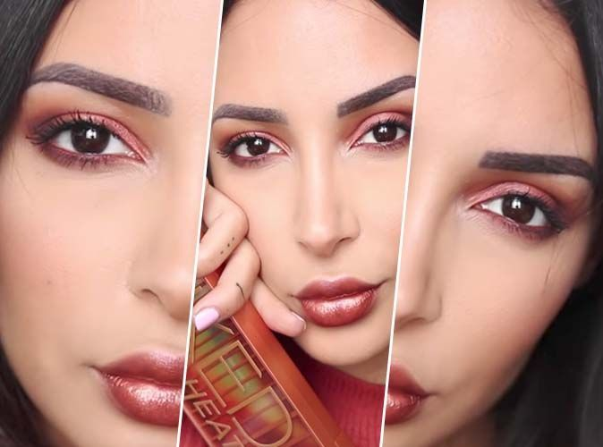
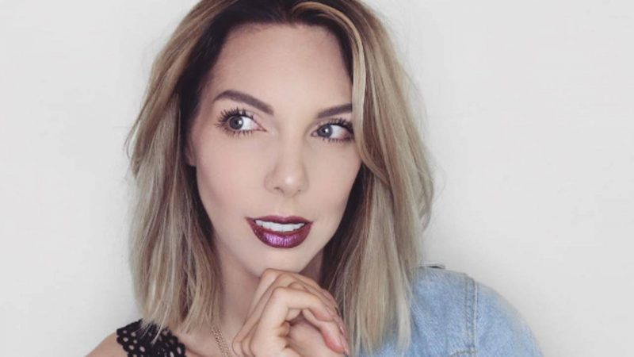
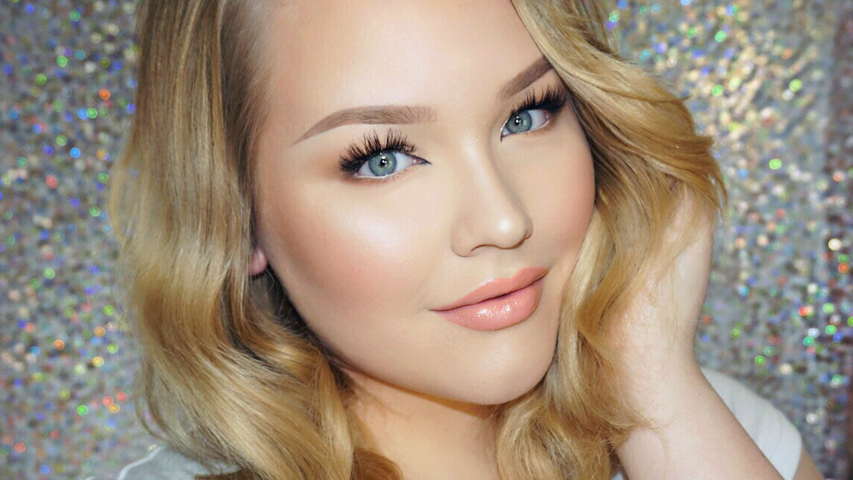

Les astuces
Les produits à avoir
Les influenceuses à suivre
Les Françaises
Sananas

Avec quasiment 2 millions d'abonnées sur sa chaîne youtube, Sananas, ou de son vrai nom: Sanaa El Mahalli, est devenue une influenceuse de taille sur internet. Elle est connue de ses nombreux "tuto makeup" qui inspirent plusieurs jeunes voulant les réaliser à leur tour. Vous pouvez également la suivre sur Instagram où elle poste des photos de ses maquillages ou même de ses nombreux voyages, mais vous pouvez également la retrouver sur son blog personnel où elle répertorie tous ses bons plan, ses produits...
Voici un exemple de ses nombreux maquillages réalisés avec la célèbre Naked Heat de Urban Decay: 
Horia

Avec un peu plus de 2 millions d'abonnées sur sa chaîne youtube, Horia, de son vrai nom: Horia Ben Brahim, est devenue une influenceuse de taille sur internet. Elle est connue de ses nombreux "tuto makeup" qui inspirent plusieurs jeunes voulant les réaliser à leur tour. Vous pouvez également la suivre sur Instagram où elle poste des photos de ses maquillages ou même de ses nombreux voyages, mais vous pouvez également la retrouver sur son blog personnel où elle répertorie tous ses bons plan, ses produits...
Voici un exemple de ses nombreux maquillage:

Elsamakeup

Avec un peu plus de 800 000 d'abonnées sur sa chaîne youtube, Elsa est devenue une influenceuse de taille sur internet. Elle est connue de ses nombreux "tuto makeup" qui inspirent plusieurs jeunes voulant les réaliser à leur tour. Elle a également crée sa propre marque de maquillage disponible sur le site de Sponjac. Vous pouvez également la suivre sur Instagram où elle poste des photos de ses maquillages ou même de ses nombreux voyages, mais vous pouvez également la retrouver sur son blog personnel où elle répertorie tous ses bons plan, ses produits...
Voici un exemple de ses nombreux maquillage:

Gaelle Garcia Diaz

Avec plus de 500 000 d'abonnées sur sa chaîne youtube, Gaelle est devenue une influenceuse de taille sur internet avec un humour décalé. Elle est connue de ses nombreux "tuto makeup" qui inspirent plusieurs jeunes voulant les réaliser à leur tour. Vous pouvez également la suivre sur Instagram où elle poste des photos de ses maquillages ou même de ses nombreux voyages, mais vous pouvez également la retrouver sur son site internet où elle vend sa marque de vêtements.
Lufy makes you up

Avec un peu plus d'un million d'abonnées sur sa chaîne youtube,Lufy est devenue une influenceuse de taille sur internet. Elle est connue de ses nombreux "tuto makeup" qui inspirent plusieurs jeunes voulant les réaliser à leur tour. Vous pouvez également la suivre sur Instagram où elle poste des photos de ses maquillages ou même de ses nombreux voyages, mais vous pouvez également la retrouver sur son blog personnel où elle répertorie tous ses bons plan, ses produits...
Voici un exemple de ses nombreux maquillage:

Sandrea
Avec un peu plus d'un million d'abonnées sur sa chaîne youtube, Sandrea est devenue une influenceuse de taille sur internet. Elle est connue de ses nombreux "tuto makeup" qui inspirent plusieurs jeunes voulant les réaliser à leur tour. Vous pouvez également la suivre sur Instagram où elle poste des photos de ses maquillages ou même de ses nombreux voyages, mais vous pouvez également la retrouver sur son blog personnel où elle répertorie tous ses bons plan, ses produits...
Voici un exemple de ses nombreux maquillage:
Hawkinsolene
Avec plus de 700 abonnées sur son compte instagram, Solène est une petite influence et inspire de nombreuses personnes avec ses maquillages très élaborés.
Voici des exemples de ses nombreux maquillage:


Les Américaines
Okaylaaa

Avec un peu plus de 620 000 abonnées sur sa chaîne youtube, Okay, de son vrai nom: Kayla Jenkins, est devenue une influenceuse de taille sur internet. Elle est connue de ses nombreux "tuto makeup" qui inspirent plusieurs jeunes voulant les réaliser à leur tour. Vous pouvez également la suivre sur Instagram où elle poste des photos de ses maquillages ou même de ses nombreux voyages.
Voici un exemple de ses nombreux maquillage:
An Knook

Avec un peu plus de 530 000 abonnées sur sa chaîne youtube, An Knook est devenue une influenceuse de taille sur internet. Elle est connue de ses nombreux "tuto makeup" qui inspirent plusieurs jeunes voulant les réaliser à leur tour. Vous pouvez également la suivre sur Instagram où elle poste des photos de ses maquillages ou même de ses nombreux voyages, mais vous pouvez également la retrouver sur son site où elle vend sa propre marque de cosmétique.
Voici un exemple de ses nombreux maquillage:

Nikkie Tutorials
Avec un peu plus de 8 millions d'abonnées sur sa chaîne youtube, Nikkie Tutorials, de son vrai nom: Nikkie de Jager, est devenue une influenceuse de taille sur internet. Elle est connue de ses nombreux "tuto makeup" qui inspirent plusieurs jeunes voulant les réaliser à leur tour. Vous pouvez également la suivre sur Instagram où elle poste des photos de ses maquillages ou même de ses nombreux voyages, mais vous pouvez également la retrouver sur son site où elle y met ses tutos et toutes ses astuces...
Voici un exemple de ses nombreux maquillage:
Retrouvez moi sur les réseaux :


LEDUC Charlène - Mini Projet Conception Internet - 2017-2018